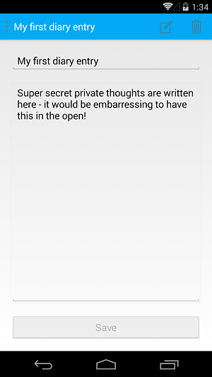

Duration
20 minutes
Goals
In this lab exercise, you will modify an existing Xamarin.Forms application to add support for utilizing an Azure mobile service. You can use any mix of the platform projects depending on your development environment (macOS or Windows). All variations are supplied (iOS, Android, and Universal Windows).
Assets
There is both a starter application which has the UI all built out and a completed version of the exercise in the Exercise 1 folder.
Challenge
There are several steps we will take for this lab:
- Run and explore the code for the starter project.
- Switch the endpoint of the service to be a version that requires authentication and run the app to find that it now fails.
- Add a call to `LoginAsync` against a known social provider in each of the platform-specific head projects.
- Re-run the app to authenticate against the chosen provider and retrieve the diary entries.
Steps
Explore the Starter Solution
Open and explore the starter solution. The application is a Xamarin.Forms based diary application that will use Azure as the database. The application connects to an existing Azure service which does not require any authentication, and as you will see, all diary entries are visible to the world!
- Set your preferred platform-specific project as the startup project. Any of them will work.
- Hint: For Windows projects, you will likely need to select a configuration other than "AnyCPU" (e.g. x86 or x64 [preferred]).
- Build and run the application to see it work. 
- You can edit entries, add new ones, and even delete them. Notice that you can see entries which were entered by other people.
- Expand the solution - it contains several projects:
- Take a few minutes and explore the solution - it's a pretty standard Xamarin.Forms application with Azure support - very much like the one built in AZR115.
| Project | Description |
|---|---|
| MyDiary | This is the core Xamarin.Forms Shared Project. It contains the Page definitions, the Azure data models, the ViewModels for the views, and the code which will interact with the service. It defines the Azure service as an interface - even though we don't have a different implementation. However this approach would allow us to mock it out for testing, or to even replace it with a different backend (or local database) if we wanted to. In effect, it minimizes the coupling of the Azure service from the rest of the code.
|
| MyDiary.Droid | The Xamarin.Android platform-specific (head) project. |
| MyDiary.iOS | The Xamarin.iOS platform-specific (head) project. You will need a macOS host to run this application. |
| MyDiary.UWP | The Windows UWP platform-specific (head) project. You will need to be using Windows to run this project. On the Mac, it will be disabled. |
Switch to the authenticated service
As a first step, we will switch over to a different version of the service that requires authentication.
- Open the DiaryEntry.cs source file in the Models folder in the shared project. This defines our DTO, which is passed back and forth between the service and client.
- Recall from AZR115 that the name of the DTO class decides the table endpoint you call. The current table being used is /tables/diaryentry which does not require any authentication. We want to change it to be /tables/diaryentry2 which is a separate endpoint (using the same data) that does require authentication.
- At the top of the class, add a
[JsonObject(Title="diaryentry2")]attribute to change the endpoint. -
Remember: you will need to add a
using Newtonsoft.Jsonstatement, or fully qualify the attribute. - Run the application again. You might get an "Unauthorized" error, or you might see the same entries you saw earlier due to offline caching. In this latter case, until you try to edit the data, it's possible that all will seem fine! However, this is an illusion of the offline synchronization capabilities of Azure. Even if it fails initially, let's make sure we aren't caching data off without authentication.
- Open the AzureDiaryService.cs source file in the Services folder in the shared code and locate the
InitializeAsyncmethod in the class. - Add a call to
PurgeAsyncin theInitializeAsyncmethod just after it retrieves thediaryTable. Pass true to force it to clear the local database cache. - Run the application again to see the real results. You should get an error indicating that authentication is required.
- This is a direct result of our attempt to call the service without an authentication token.
[JsonObject(Title = "diaryentry2")]
public class DiaryEntry
{
...
}
private async Task InitializeAsync()
{
...
await diaryTable.PurgeAsync(true);
}
PurgeAsync in place to ensure we are always refreshing our contents from the server initially as we've got a few other cases where our cached data will be invalidated. However, keep in mind that in a production application, we might remove this call and use this method when the user logs out, or when we want to do a full refresh.
Authenticate to a social provider
Now that our service requires authentication, let's provide that by authenticating against a known social provider. The service has been configured to support Facebook, Twitter, Google, and Microsoft. You can use a valid email address registered with any of these for this objective.
Because the code for authenticating is always platform-specific, we need to make sure the call to LoginAsync is placed into each project. In this case, we are using a Shared Project for our shared code, so you can use #ifdef conditionals if you want, however the lab will use partial classes to segregate the code to make it cleaner.
- Open the AzureDiaryService.cs file and add a new method named
LoginAsyncwhich we will use to do the log in step. It won't need any parameters but should return aTaskresult. This method can be private. - We will eventually add some more code to this method, but for now just add a single call to a new method named
PlatformLoginAsyncand pass aMobileServiceAuthenticationProviderenumeration type. In our code hint below, we will use Twitter, but remember it's up to you as to which social provider you want to authenticate against - all of them are supported by our service. - The
PlatformLoginAsyncmethod will be platform-specific and we want to place it into a separate source file as part of each platform-specific head project. To do this, we need to make this class apartialclass - add that to the class definition. If you aren't familiar with this approach, check the hint below and make sure to go take the XAM110 course where we walk about different ways to share code in Shared Projects! You can also use#ifdefconditions for the below code if you prefer.
Next, let's add the platform-specific code to each project. You will need to do this for each project you want to support - in addition, if you don't add the code, the platform-specific project will generate errors - so either unload the projects you don't want, or make sure to implement them all.
PlatformLoginAsync even after you've implemented it because it sometimes gets confused by partial classes split across Shared Projects. You can ignore this parsing error as long as it compiles - hopefully it will get fixed in a future update.
Android
Let's start with Android. The Android variation of LoginAsync requires the Activity Context - we could pass this in as part of our initialization, but it turns out there is a easier way; we can reach the Context by using the Android.App.Application.Context property.
- Add a new source file to the Android project (MyDiary.Droid) named AzureDiaryService.cs.
- Change the namespace to be
MyDiary.Servicesto match our shared code definition. - Add the
partialdirective to the class definition. - Create the
PlatformLoginAsyncmethod. It should:- Take a
MobileServiceAuthenticationProviderenumeration. - Make a call to
azureClient.LoginAsync, passing the provider enum value and the main activityContextwhich you can get from the static propertyAndroid.App.Application.Context. - Return the
Taskfrom theLoginAsynccall.
- Take a
iOS
Next, let's move to the iOS platform-specific project.
- Do all the same steps as Android, except for this call to
LoginAsync, you will need the rootUIViewController. You can retrieve this using another static property available in Xamarin.iOS projects:UIApplication.SharedApplication.KeyWindow.RootViewController.
Windows
Finally, let's implement the Windows platform-specific project.
- This one is the easiest - add your new source file in the correct namespace and make a call to
LoginAsync. In this case, you only need to pass the provider enumeration - everything else is known to the library without parameters.
Rebuild the solution to make sure all your code is in place.
Integrate Log-in code into the Azure access code
We are ready to authenticate with Azure and our social provider. To make this as seamless as possible, we will integrate the log in code into our SynchronizeAsync method in our client's service access code. However, we could also do this as part of our application startup, or even have a dedicated login screen which we present to the user to select their preferred social provider (as an example).
All the code will be in the SynchronizeAsync method which is used to push our changes up to Azure and then pull down any updates made by other users/clients. There are two cases we need to look for:
- We need to look for a
MobileServicePushStatus.CancelledByAuthenticationErrorstatus code when we encounter aMobileServicePushFailedException. This is reported when we've already attempted authentication once and it either failed or was canceled. - We also need to look for a new exception of type
MobileServiceInvalidOperationExceptionwhich is thrown when we've not yet attempted authentication but it's required for the table endpoint we are hitting. In this case, we also want to look at theResponse.StatusCodeproperty and make sure it's an Unauthorized status.
- Open the AzureDiaryService.cs and locate the
SynchronizeAsyncmethod. - Add a new
catchhandler after the current one of typeMobileServiceInvalidOperationException. In that handler:- Check the exception's
Response.StatusCodeproperty and compare it to the valueSystem.Net.HttpStatusCode.Unauthorized. - If it's a match, call the
LoginAsyncmethod (with anawait), then call theSynchronizeAsyncmethod again.
- Check the exception's
- Next, in the handler for the
MobileServicePushFailedException, add some code to the beginning of the logic to check the exception'sPushResult.Statuscode to see if it'sMobileServicePushStatus.CancelledByAuthenticationError. This indicates we need authentication. - If it's a match, add the same code we used in the other exception: call
LoginAsync,SynchronizeAsyncand then return. - You can check your code against the completed code below:
- Run the application - it should now prompt you for the user/password of your selected identity provider and then allow you access to the service. As an example, here is Facebook authentication:
- However, it still shows all user's data! So even though Azure now knows who we are (or has information about that), it doesn't really change the data access. We'll fix that in the section, but next we will talk about using the authenticated user data in our app.
Summary
In this exercise, you added support to an existing Xamarin.Forms application to access an Azure mobile service that requires authentication using the server-flow.